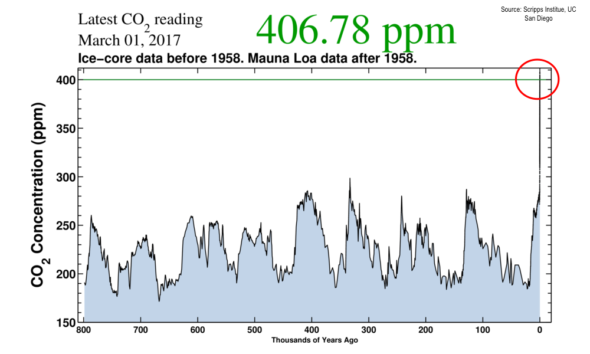
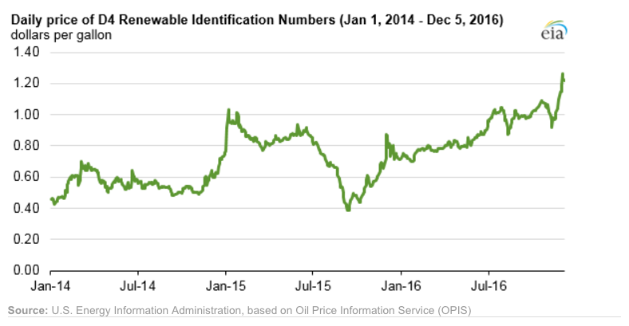
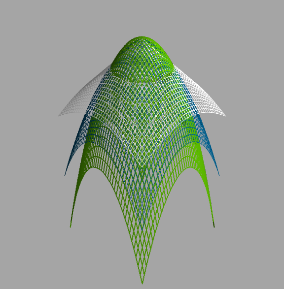

Forest products and bioenergy in California
The role for UC research and extension
pete@odin
Peter W. Tittmann, Ph.D.
Candidate overview
- Breadth of research expereince
- Experienced in a broad range of analytical methods
- In-depth knowledge of California
- Forest, climate and energy policy
- Track record in Cooperative Extension
- Developed Woody Biomass group extension program
A Timely Challenge
Accelerating pace of ecological change

California's unique climate
Bark Beetle

Sudden Oak Death
Gold-spotted Oak Borer

Declining wood utilization infrastructure

California forest products industry
| State | Rough lumber (%) | Surfaced lumber (%) |
|---|---|---|
| CA | 34 | 65 |
| ID | 3 | 97 |
| MT | 4 | 96 |
| OR | 5 | 95 |
| WA | 4 | 96 |
Projected demand for biofuel

Carbon intensity of biofuels
<graphic>
Decline in biomass power in CA Renewables Portfolio Standard
<calag graphic>
Research
- Geospatial
- LiDAR in Forestry
- Big spatial data
- Wood science
- Redwood properties
- Industrial Ecology
- Regional/National bioenergy planning
- Biomass feedstock supply
- Climate impacts of roundwood harvesting
- Life-cycle analysis of forest managemet decisions
LiDAR as a tool for Forest Management
- Individual tree detection and delineation
- Geometric shape-fitting
- RAndom Sample and Consensus (RANSAC)
RANSAC

3d model
\(f(x,y) = -\lambda (x^2 + y^2) + (\lambda -1)\sqrt{x^2+y^2}\)
\(\lambda\) = Shift parameter between conic and parabolic shapes

RanSAC Model results

Big Geospatial: Utilization of Biomass from tree mortality
Collaborators: Carmen Tubbessing (Ph.D. Candidate ESPM), Jose Lara (Ph.D. Candidate Energy and Resources)
Funded by: California Energy Commission
- Translate Aerial Detection Survey mortality to biomass volume
- Model harvest and transport costs
- Evaluate substation-level distribution capacity for small scale (>3MW) biomass power.
Mapping Mortality

Spatial Clustering
Redwood Properties: NZ vs CA
Calculate Modulus of Elasticity (MOE) and modulus of Rupture (MOR) for redwood samples from New Zealand and California

Impact of torrefaction on biomass supply chains
- Multi-modal transportation network model
- Techno-economic model of torrefaction at 4 scales
- Mixed integer-linear optimization of location and scale
Li Y, Tittmann P, Parker N, Jenkins B. Economic impact of combined torrefaction and pelletization processes on forestry biomass supply. GCB Bioenergy [Internet]. 2016 Jul [cited 2016 Aug 11]; Available from: http://doi.wiley.com/10.1111/gcbb.12375
Impact of torrefaction on feedstock supply

Spatial dynamics of torrefaction pre-treatment

Extension
- Technology Transfer
- Web/mobile decision support applications.
- Direct technical assistance
- Public Education and Outreach
- Social media presence
- Public workshops and conferences
- Policy Engagement
- Synthesis and and interpretation of research findings for policy initiatives
Technology transfer
A few examples..
pymiata: Forestry equipment cost calculator

pymiyata Example
| Manufacturer | Model | Initial investment ($) | Salvage Value($) | Economic Life (years) | Scheduled Operating Time (hrs/year) | Productive Time (hrs/year) | Utilization Rate | Use Cost ($/PMH) |
|---|---|---|---|---|---|---|---|---|
| Fecon | FTX128 | 200000 | 40000 | 5 | 1872 | 1215.36 | 0.649230769 | 74.318588 |
| Kaiser | S2-2 | 374000 | 74800 | 5 | 1872 | 1215.36 | 0.649230769 | 115.7630803 |
| FAE - Prime Tech | PT-175 | 255000 | 51000 | 7.5 | 1872 | 1215.36 | 0.649230769 | 76.47029789 |
| Takeuchi | TL12CRH | 118056 | 23611.2 | 8 | 1872 | 1248 | 0.666666667 | 44.96581 |
| Caterpillar | 299D XHP | 144200 | 30000 | 5 | 1872 | 1215.36 | 0.649230769 | 59.3833117 |
| Takeuchi | TB290CL | 137949 | 27589.8 | 8 | 1872 | 1215.36 | 0.649230769 | 44.51276035 |
| John Deere/Fecon | JD210 with BH80EXC | 270000 | 54000 | 20 | 1872 | 1560 | 0.833333333 | 60.50512261 |
| 2000 Timbco Feller Buncher | 425D | 505000 | 101000 | 10 | 1872 | 1755 | 0.9375 | 101.0949626 |
Advanced Hardwood Biofuels Northwest
- Decision support for biorefinery siting
- Transportation routing
- Poplar growth model
- Soils
- Climate
- Biorefienery cost model (Jet Fuel, Ascetic Acid)
- Detailed farm budgets
- Crop switching
Forest Products and Bioenergy Extension: A Strategic Vision
foobas
Forest Products
Notes
Treats: Lack of external awareness of UC ANR • Other agencies filling void without sciencebased knowledge • Cost of living and labor in California • “Cottage Extension Programs” on other UC campuses – lack of coordination and collaboration • Speed of information flow – quantity and quality • General population lacks scientific knowledge • California water concerns "The general disciplinary focus of this position is the sustainable use of forest and wood resources."
"The general disciplinary focus of this position is the sustainable use of forest and wood resources. Priority issues include life-cycle assessments and carbon cycles of forest products including wood-based bioenergy, efficiency and conservation in forest products and bioenergy technology, and the impacts of utilization on community development, economic, and environmental concerns. The CE Specialist in Forest Products and Biomass will develop and promote methods for efficient and environmentally acceptable utilization of wood resources and woody biomass and analyze the impacts of forest management practices and utilization on the ability of the state to meet its greenhouse gas emission goals. "
John notes:
- Take credit, explain role
- Dont run long shoot for 40 minutes
- Talk about forest products
- List forest products
- Life cycle analysis
- Importance of forest products in climate policy
- Results slide for Redwood